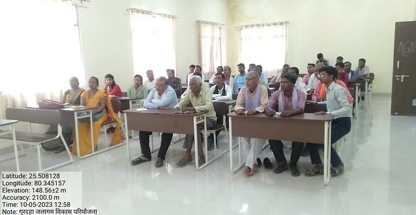
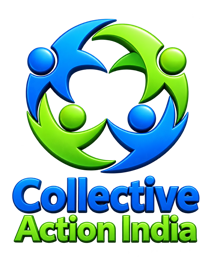
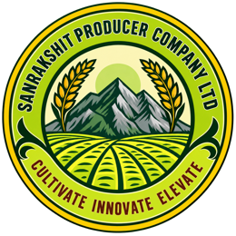

About Us
A Society Act 1860-registered NGO, founded in July 2009 in Banda, Uttar Pradesh.
Serving Bundelkhand since 2009
SMNTGVSS was founded with a deep commitment to serve the most marginalized communities of rural Uttar Pradesh. Rooted in the Bundelkhand region — one of India’s most drought-prone and underdeveloped areas — the organization has grown from a grassroots initiative into a credible development institution.
Its work spans livelihoods, women’s empowerment, education and skills, health and nutrition, cattle welfare, natural resource management, disaster relief and linking families to government schemes.

Vision, mission & goal
Vision
An equity-based society where there is equality and better opportunities for the upliftment of marginalized sections who are socially, economically and politically deprived.
Mission
To uplift rural communities through education, healthcare, skill development and sustainable livelihoods; to promote women empowerment, child welfare, environmental protection, sustainable agriculture and cattle welfare; to raise awareness on health, cleanliness and renewable energy; and to provide timely relief during emergencies and disasters.
Goal
To improve the quality of life for oppressed, disadvantaged and marginalized people.
Fifteen years of steady growth
Founded and registered under the Society Act 1860
First community programmes launched in Banda
Expanded to cattle welfare and Gaushala management
Partnered with government schemes and NRLM
COVID-19 relief operations across Bundelkhand
15+ years of sustained community impact
What guides our work
Integrity
Transparent, accountable and ethical in all operations
Inclusion
Prioritizing the most excluded and vulnerable groups
Sustainability
Lasting solutions rooted in community ownership
Collaboration
Partnering with government, civil society and communities
Innovation
Evidence-based approaches adapted to local contexts
Social Justice
Upholding rights, dignity and equity for all
Governing Board (11 members)
The Board serves voluntarily, meets quarterly, and provides strategic direction, oversight and accountability. Governance is kept separate from day-to-day management.
Alok Singh
Strategic leadership, institutional direction and community representation.
Rama Devi Sahu
Supports board leadership, governance oversight and coordination.
Lallu Prasad Sahu
Coordinates administration, operations and board activities; 15+ years in development.
Mandakini Sahu
Assists with records, documentation and organizational coordination.
Satya Prakash
Financial oversight, budget review and fiscal accountability.
Members: Gyanvati Singh, Vandna, Ramraj Patel, Rajesh Kumar, Ved Prakash, Awdhesh Kumar.
True development is possible only when the community becomes the owner of change.
Mr. Lallu Prasad Sahu, Secretary / Manager & Chief Executive
With more than 15 years in the development sector, he has been involved in rural development, community mobilization, farmer support, women empowerment, cattle welfare, education, skill development and livelihood promotion. His experience in HR, computer education and office administration has strengthened the institutional capacity of SMNTGVSS.
His vision: self-reliant, educated, healthy and dignified rural communities where women, farmers, youth, children and vulnerable groups receive equal opportunities.
Our partners


